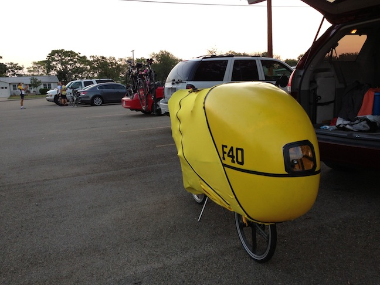
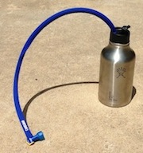
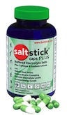
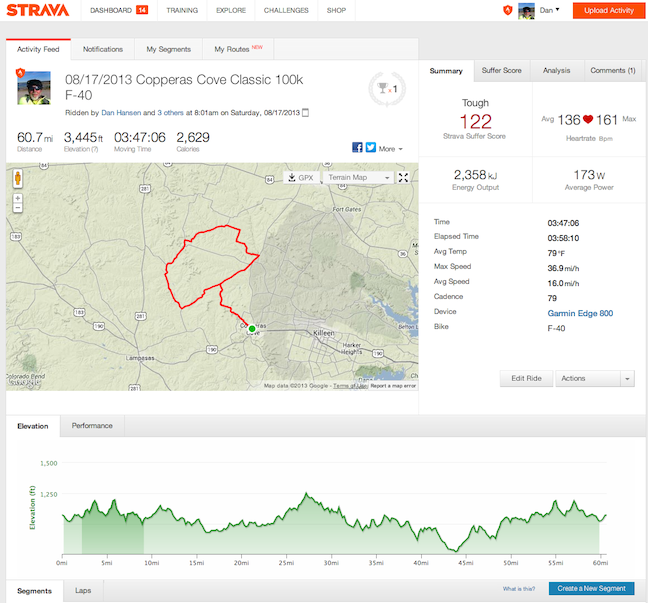
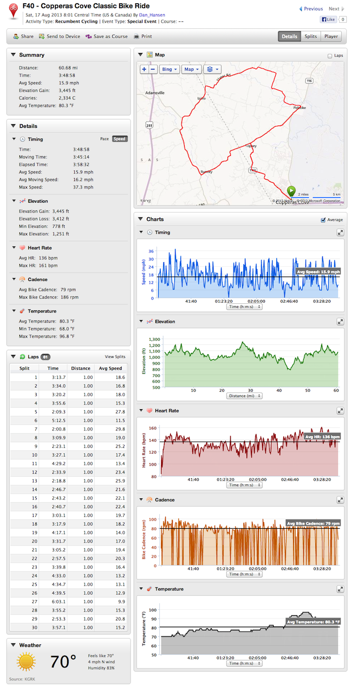

Copperas Cove Classic Bike Ride - F-40 ride report
17 Aug 2013

This was my first charity ride with the F-40 and the pre-ride comments were very interesting:
Middle-aged-dad: "I told my son that was a wrapper for safely transporting your bike."
Me: "Well no, it is firmly attached and I ride it like this."
Middle-aged-dad: "YOU’RE GOING TO RIDE WITH THAT ON????"
"I thought that was a kayak when I saw you taking it out of the car!"
After unzipping the side: "THERE’S A BIKE IN THERE!"
"Did you build that by hand?"
"Does it have AC?"
The Copperas Cove Classic Bike ride is a small ride with great support and back country road with little car traffic. There were about 150 riders and I was the only recumbent. The morning was unusually cool for this time of year with the temperatures only rising into the nineties towards the end of the ride.
Winds were 12 mph steady and out of the North (with the F-40 wind information becomes important).
With my other recumbents I always tried to start the ride at the front of the pack. I’ve found the front position the least stressful because mixing it up with the upright bikes while they are trying to get clipped in and stutter starting is never any fun. Most small towns in Texas are built on hills and the first few miles of a ride are usually a nice easy downhill. With police motorcycle escort on the Musashi I was always cruising easily at the front of the pack just behind the motorcycle for a quick 18 to 21 mph initial ride out of town. Of course, once we hit the first hill I was usually dropped like a rock.
So today I take my F-40 up to the front of the start line. Everyone lines up at least 20 yards behind me? Like I have some kind of contagious disease. Whatever. So the ride starts and I’m coasting right behind the police escort. we quickly cruising at 28 mph and are at least 1/4 mile ahead of everyone else - the escort sees he is just escorting me - which causes him to apply the brakes and slow down to let everyone catch up. I spend the first five miles riding out of town constantly on the brakes to keep the speed under 18 mph and stay behind the escort.
New F-40 rule for small town rides: Start the ride at the extreme back of all the riders where everyone else has a chance to get out on the road first. Then spend the first 20 minutes coasting past everyone at a decent speed.
At about the 27 mile mark the riders doing the 50 mile route split off to take a shorter path than the riders doing the 100k route. The 50 mile route riders rejoin up with the 100k route riders after the 100k route riders have ridden about 50 miles. So shortly after I had passed the 50 mile marker (on the 100k route) many riders doing the 50 mile route start passing me on this really long steep uphill. I’m grinding (spinning?) away up this hill doing about 5 mph and the uprights are passing me doing at least twice my speed. It takes me a good 10 minutes to climb the hill. Lots of comments about how hot it must be in that thing. Or, hmmm, recumbents can’t climb (forget the fact I’ve already ridden 12 miles more that they have). Going down on the other side of the hill at 35 mph the story was a little different.
About 30 minutes after I had finished the ride a young woman comes into the finish area completing the 50 miler and stops to talk to me. She says: "You know, I passed you going up that steep hill and thought you would never catch me. When I was almost down the other side of the hill I saw this yellow dot crest the top of the hill a long ways behind me. I thought it’s time to put in some effort so that yellow thing will never catch me. Next thing I know you’re blowing by me like I’m standing still and I look down and I’m doing 24 mph. You were quickly out of sight and I never saw you again."
All in all it was a great day to be on a bike ride! I’ll probably to this one again next year, even with all the climbing.
Riding in the heat - It turns out that riding in the heat is pretty much a non-issue. Except for really long steep hills where greater than 5 minutes is spent climbing in low gear and the temperatures are in the high 90s.
In every other scenario with the F-40 you are traveling fast enough to actually be cold.
A couple of things to remember.
First, I’m no longer wearing bicycling specific clothing. I now wear Nike Dri-FIT running shorts and running shirt. These are very light weight with great moisture wicking abilities. With any little breeze inside the F-40, which is easy to get at 20 mph, you will be evaporative cooled. Spandex bicycle shorts are very heavy and thick by comparison. Bicycle jerseys are also very heavy and thick by comparison.
Second, you are riding in the shade and you are protected from road heat by the bottom of the fairing.
However, on the long steep climbs where you are crawling up at 5 mph for many minutes you will get very hot.
You can unzip the top and sides of the fairing to let in some breeze while going up these steep hills.
NOTE: Do not disconnect the velcro at the top to open up the sides completely because of two reasons: 1) the sun can now shine in and you are no longer riding in the shade (that makes it warm up fast), and 2) it takes two hands to pull the spandex tight enough to refasten the velcro (ie you will be stopping at the top of the hill in the middle of the road with no shoulder to refasten the spandex so that you can get the heck out of the sun).
The stump puller gear - The low, low, low gearing on the F-40 allows you to climb any really steep hill. This is the first ride with thousands of feet of climbing where I did not have to get off the bike and walk the really steep hills. The low speed handling abilities of the base P-38 really stand out when climbing these hills spinning at 80 rpm and moving at 5.5 mph.
Marathon Plus Tires - One of the best recommendations I got for learning how to ride an F-40 was to use Marathon Plus Tires. These things are heavy and slow - but they are bomb proof. Twice today while traveling downhill at 35 mph I hit big potholes that launched the bike into the air. The Marathon Plus tires combined with the front shock absorber made it minor event. Hitting those potholes while riding the Musashi would have been much more exciting.
|  | The beer growler worked well! Never ran out of drink. Even after refilling at the 44 mile rest stop there was still plenty of ice left at the end of the ride. With 64 oz of gaterade it is very heavy. But when climbing up some of the larger hills on the course, in 96.8 degree heat, it was really nice to be able to take several sips of ice cold drink. |
|  | In my last 3,000 miles of riding every ride over 2 hours in the heat has always required some kind of cramping management. Usually around the 2 1/2 hour mark I start to feel cramps in my calfs for quads. I then start to easy peddle slowly downhills while stretching my leg muscles as much as possible. With my quads I sometimes have to even get off the bike and walk some to loosen up. I was taking Hammer Nutrition Endurolytes capsules every 30 minutes which helped some. Today I took Saltstick Plus capsules instead. No hint of cramping during the whole ride. There was even 3,445 feet of climbing and several of the hills I really pushed it and definitely went into anaerobic mode with the muscles. These things are a winner! |
http://connect.garmin.com/modern/activity/360492128
http://app.strava.com/activities/75435727

